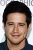

Country:United States, 84 minutes
Spoken languages:English
Genres:Horror, Thriller
Director(s):Christopher Landon
Writer(s):Christopher Landon
Video Codec:Unknown
Number: 824


Certification:R
Storyline:
Seventeen-year-old Jesse has been hearing terrifying sounds coming from his neighbor’s apartment, but when he turns on his camera and sets out to uncover their source, he encounters an ancient evil that won’t rest until it’s claimed his very soul.
Cast: 
Medium: Original DVD,
Comments: Part of: Paranormal Activity - The Ultimate Collection
Loaned: No
Aspect ratio: Unknown